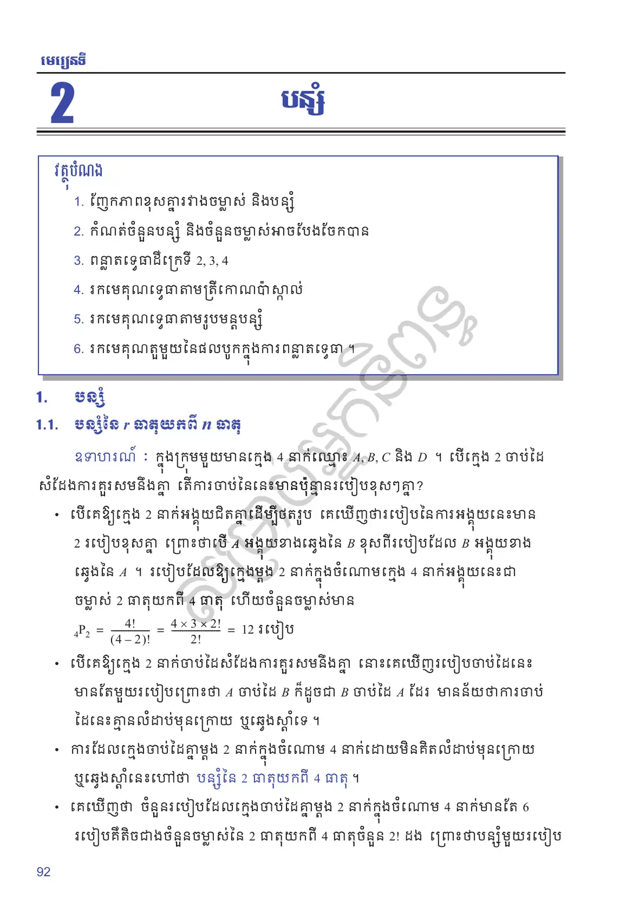
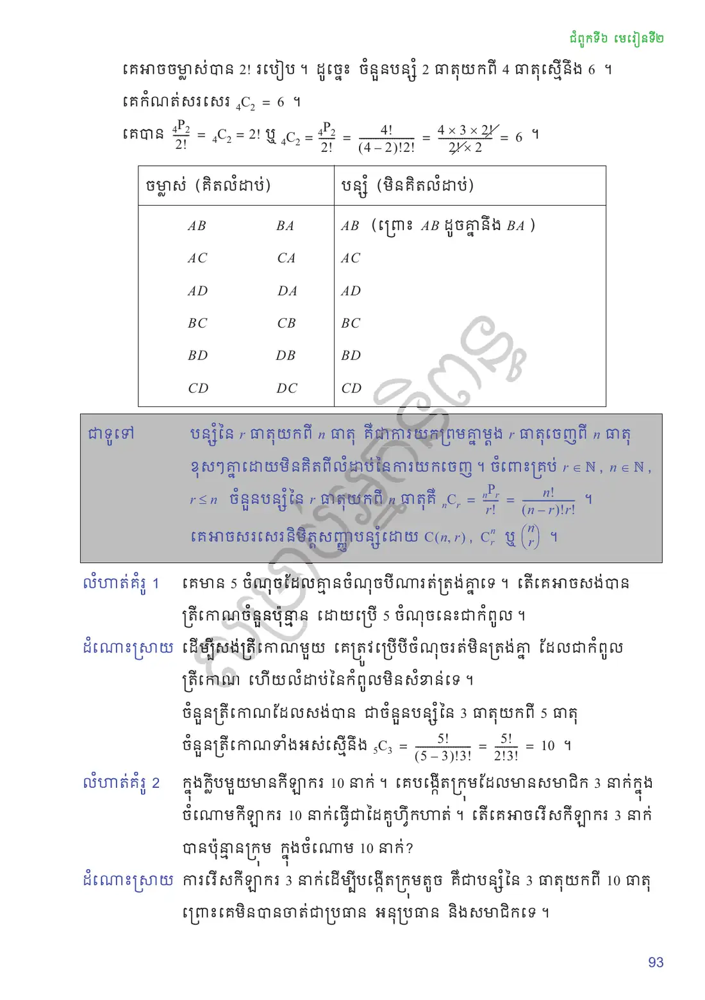
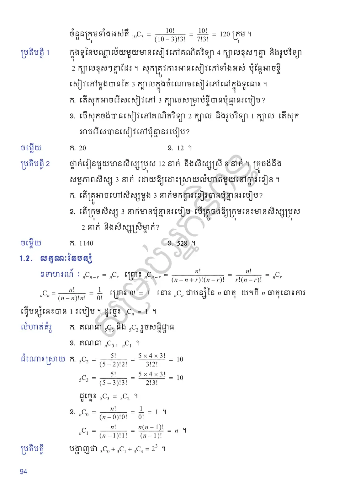
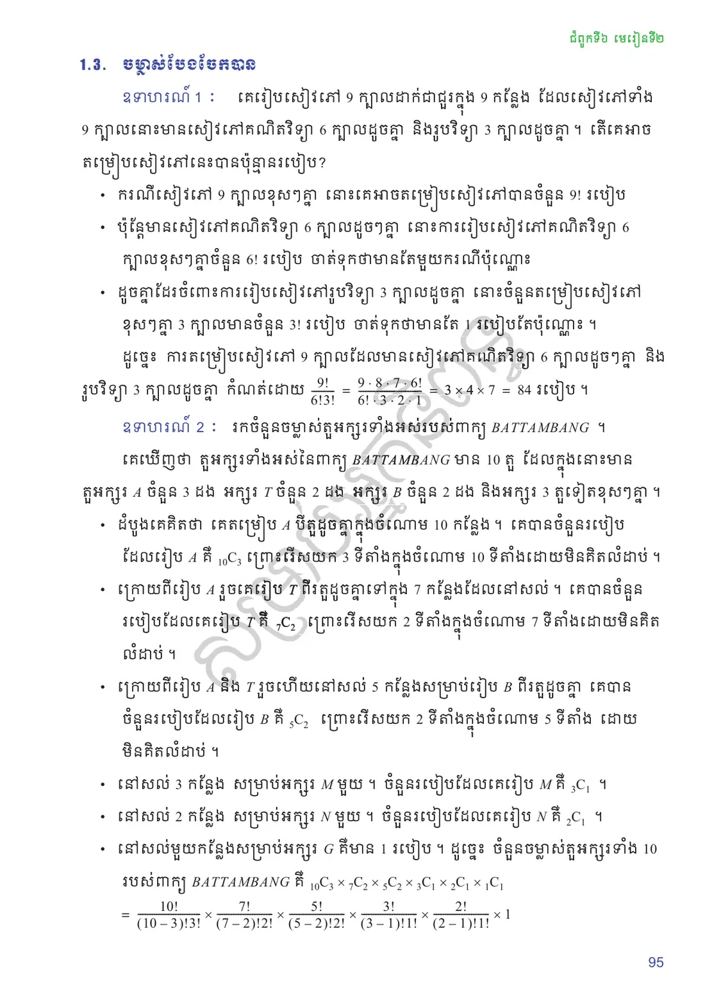
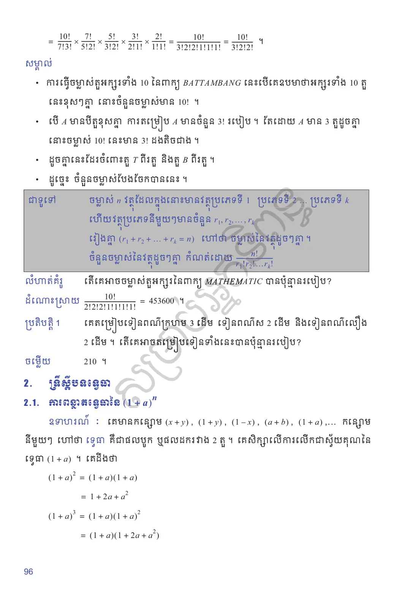
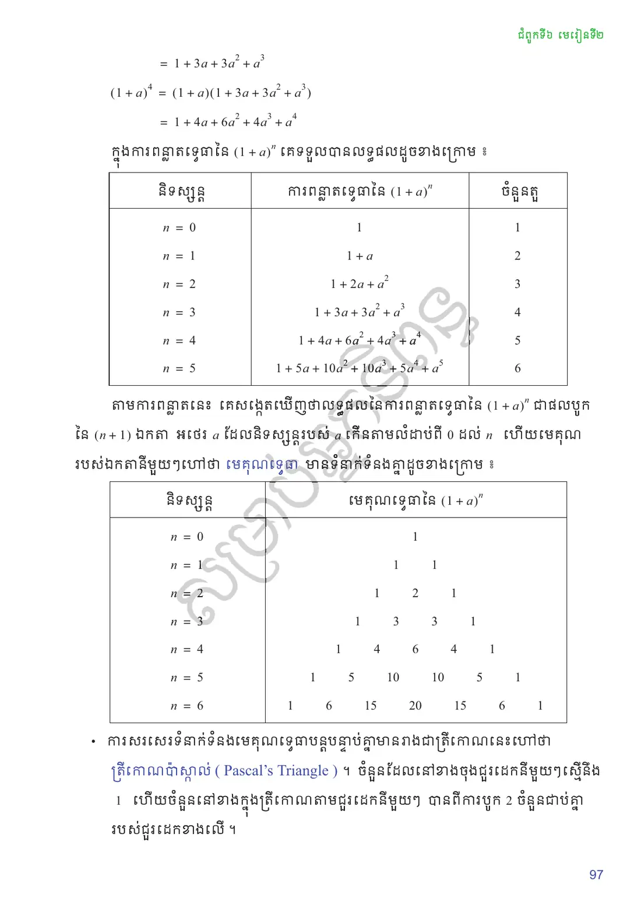
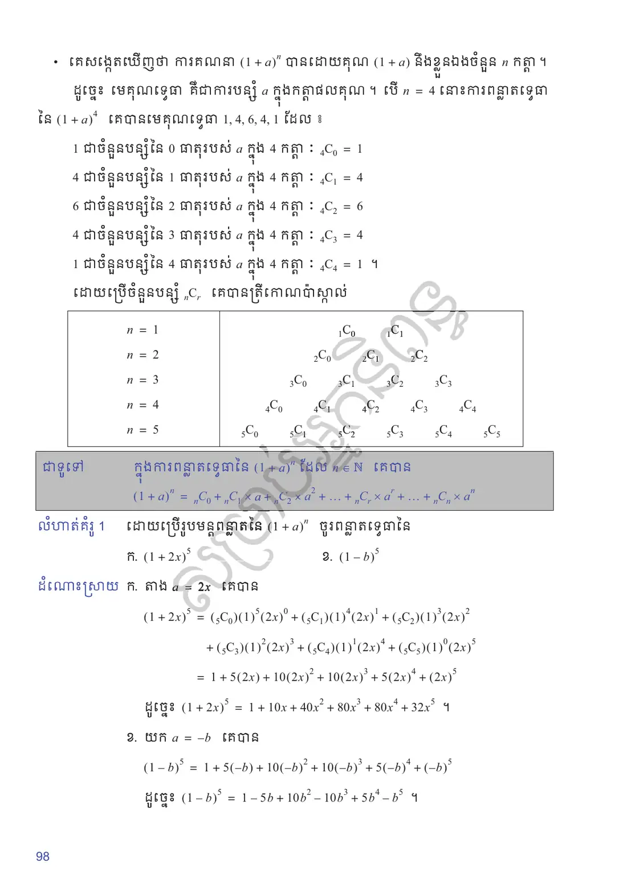
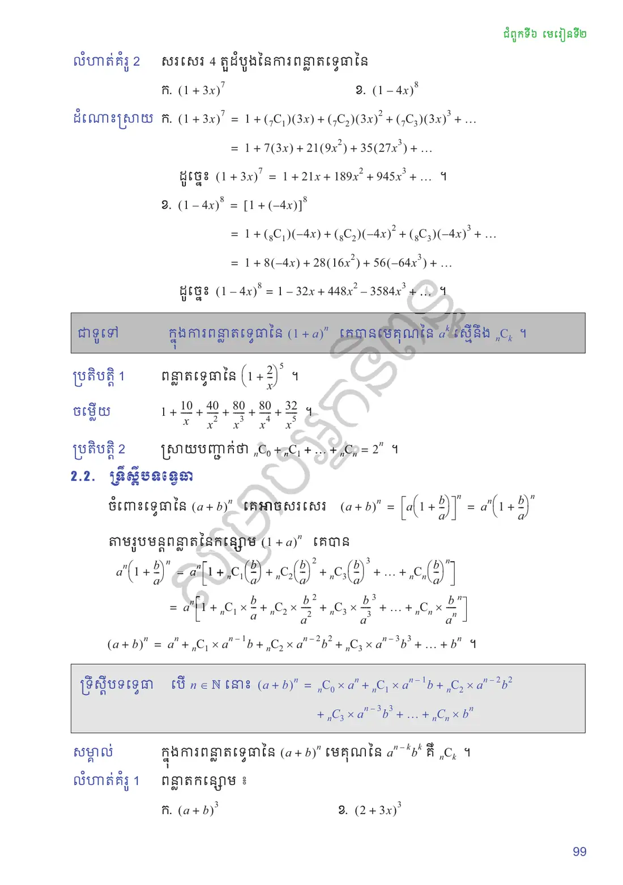
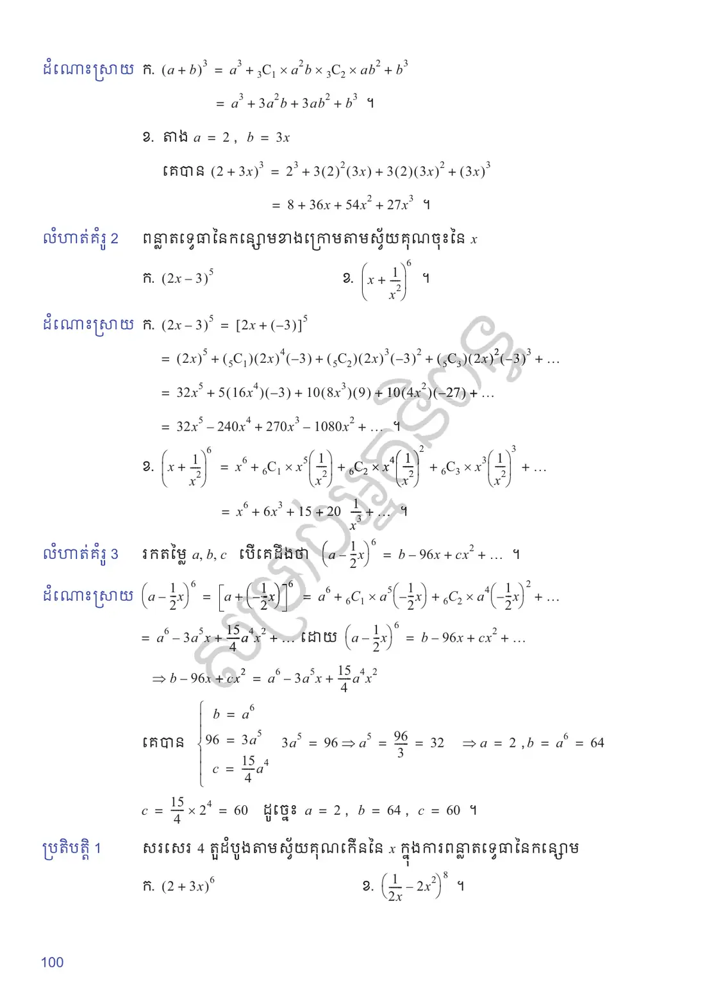
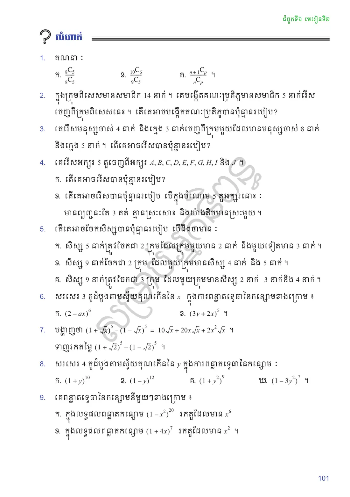

ញែកភាពខុសគ្នារវាងចម្លាស់ និងបន្សំ
កំណត់ចំនួនបន្សំ និងចំនួនចម្លាស់អាចបែងចែកបាន
ពន្លាតទ្វេធាដឺក្រេទី \(2, 3, 4\)
រកមេគុណទ្វេធាតាមត្រីកោណប៉ាស្កាល់
រកមេគុណទ្វេធាតាមរូបមន្តបន្សំ
រកមេគុណតួមួយនៃផលបូកក្នុងការពន្លាតទ្វេធា ។
បន្សំ
បន្សំនៃ \(r\) ធាតុយកពី \(n\) ធាតុ
ក្នុងក្រុមមួយមានក្មេង \(4\) នាក់ឈ្មោះ \(A, B, C\) និង \(D\) ។ បើក្មេង \(2\) ចាប់ដៃសំដែងការគួរសមនឹងគ្នា តើការចាប់ដៃនេះមានប៉ុន្មានរបៀបខុសៗគ្នា?
បើគេឱ្យក្មេង \(2\) នាក់អង្គុយជិតគ្នាដើម្បីថតរូប គេឃើញថារបៀបនៃការអង្គុយនេះមាន \(2\) របៀបខុសគ្នា ព្រោះថាបើ \(A\) អង្គុយខាងឆ្វេងនៃ \(B\) ខុសពីរបៀបដែល \(B\) អង្គុយខាងឆ្វេងនៃ \(A\) ។ របៀបដែលឱ្យក្មេងម្ដង \(2\) នាក់ក្នុងចំណោមក្មេង \(4\) នាក់អង្គុយនេះជាចម្លាស់ \(2\) ធាតុយកពី \(4\) ធាតុ ហើយចំនួនចម្លាស់មាន \({}_4P_2 = \dfrac{4!}{(4 - 2)!} = \dfrac{4\times 3\times 2!}{2!} = 12\) របៀប ។
បើគេឱ្យក្មេង \(2\) នាក់ចាប់ដៃសំដែងការគួរសមនឹងគ្នា នោះគេឃើញរបៀបចាប់ដៃនេះមានតែមួយរបៀបព្រោះថា \(A\) ចាប់ដៃ \(B\) ក៏ដូចជា \(B\) ចាប់ដៃ \(A\) ដែរ មានន័យថាការចាប់ដៃនេះគ្មានលំដាប់មុនក្រោយ ឬឆ្វេងស្ដាំទេ ។
ការដែលក្មេងចាប់ដៃគ្នាម្ដង \(2\) នាក់ក្នុងចំណោម \(4\) នាក់ដោយមិនគិតលំដាប់មុនក្រោយ ឬឆ្វេងស្ដាំនេះហៅថា បន្សំនៃ \(2\) ធាតុយកពី \(4\) ធាតុ ។
គេឃើញថា ចំនួនរបៀបដែលក្មេងចាប់ដៃគ្នាម្ដង \(2\) នាក់ក្នុងចំណោម \(4\) នាក់មានតែ \(6\) របៀបគឺតិចជាងចំនួនចម្លាស់នៃ \(2\) ធាតុយកពី \(4\) ធាតុចំនួន \(2!\) ដង ព្រោះថាបន្សំមួយរបៀបគេអាចចម្លាស់បាន \(2!\) របៀប ។ ដូច្នេះ ចំនួនបន្សំ \(2\) ធាតុយកពី \(4\) ធាតុស្មើនឹង \(6\) ។ គេកំណត់សរសេរ \({}_4C_2 = 6\) ។
គេបាន \(\dfrac{{}_4P_2}{2!} = {}_4C_2\) ឬ \({}_4C_2 = \dfrac{{}_4P_2}{2!} = \dfrac{4!}{(4 - 2)!2!} = \dfrac{4\times 3\times 2!}{2!\times 2} = 6\) ។
បន្សំនៃ \(r\) ធាតុយកពី \(n\) ធាតុ គឺជាការយកព្រមគ្នាម្ដង \(r\) ធាតុចេញពី \(n\) ធាតុខុសៗគ្នាដោយមិនគិតពីលំដាប់នៃការយកចេញ ។ ចំពោះគ្រប់ \(r \in \mathbb{N}\), \(n \in \mathbb{N}\), \(r \le n\) ចំនួនបន្សំនៃ \(r\) ធាតុយកពី \(n\) ធាតុគឺ
គេមាន \(5\) ចំណុចដែលគ្មានចំណុចបីណារត់ត្រង់គ្នាទេ ។ តើគេអាចសង់បានត្រីកោណចំនួនប៉ុន្មាន ដោយប្រើ \(5\) ចំណុចនេះជាកំពូល ។
ដើម្បីសង់ត្រីកោណមួយ គេត្រូវប្រើបីចំណុចរត់មិនត្រង់គ្នា ដែលជាកំពូលត្រីកោណ ហើយលំដាប់នៃកំពូលមិនសំខាន់ទេ ។ ចំនួនត្រីកោណដែលសង់បាន ជាចំនួនបន្សំនៃ \(3\) ធាតុយកពី \(5\) ធាតុ ។ ចំនួនត្រីកោណទាំងអស់ស្មើនឹង \({}_5C_3 = \dfrac{5!}{(5 - 3)!3!} = \dfrac{5!}{2!3!} = 10\) ។
ក្នុងក្លិបមួយមានកីឡាករ \(10\) នាក់ ។ គេបង្កើតក្រុមដែលមានសមាជិក \(3\) នាក់ក្នុងចំណោមកីឡាករ \(10\) នាក់ធ្វើជាដៃគូហ្វឹកហាត់ ។ តើគេអាចរើសកីឡាករ \(3\) នាក់បានប៉ុន្មានក្រុម ក្នុងចំណោម \(10\) នាក់?
ការរើសកីឡាករ \(3\) នាក់ដើម្បីបង្កើតក្រុមតូច គឺជាបន្សំនៃ \(3\) ធាតុយកពី \(10\) ធាតុ ព្រោះគេមិនបានចាត់ជាប្រធាន អនុប្រធាន និងសមាជិកទេ ។ ចំនួនក្រុមទាំងអស់គឺ \({}_{10}C_3 = \dfrac{10!}{(10 - 3)!3!} = \dfrac{10!}{7!3!} = 120\) ក្រុម ។
ក្នុងទូនៃបណ្ណាល័យមួយមានសៀវភៅគណិតវិទ្យា \(4\) ក្បាលខុសៗគ្នា និងរូបវិទ្យា \(2\) ក្បាលខុសៗគ្នាដែរ ។ សុកត្រូវការអានសៀវភៅទាំងអស់ ប៉ុន្តែអាចខ្ចីសៀវភៅម្ដងបានតែ \(3\) ក្បាលក្នុងចំណោមសៀវភៅនៅក្នុងទូនោះ ។ ក. តើសុកអាចរើសសៀវភៅ \(3\) ក្បាលសម្រាប់ខ្ចីបានប៉ុន្មានរបៀប? ខ. បើសុកចង់បានសៀវភៅគណិតវិទ្យា \(2\) ក្បាល និងរូបវិទ្យា \(1\) ក្បាល តើសុកអាចរើសបានសៀវភៅប៉ុន្មានរបៀប?
ថ្នាក់រៀនមួយមានសិស្សប្រុស \(12\) នាក់ និងសិស្សស្រី \(8\) នាក់ ។ គ្រូចង់ដឹងសម្ថភាពសិស្ស \(3\) នាក់ ដោយឱ្យដោះស្រាយលំហាត់មួយនៅក្ដារខៀន ។ ក. តើគ្រូអាចហៅសិស្សម្ដង \(3\) នាក់មកក្ដារខៀនបានប៉ុន្មានរបៀប? ខ. តើក្រុមសិស្ស \(3\) នាក់មានប៉ុន្មានរបៀប បើគ្រូចង់ឱ្យក្រុមនេះមានសិស្សប្រុស \(2\) នាក់ និងសិស្សស្រីម្នាក់?
មើលចម្លើយ
ក. \({}_6C_3 = 20\) ខ. \({}_4C_2\times{}_2C_1 = 12\)
ក. \({}_{20}C_3 = 1140\) ខ. \({}_{12}C_2\times{}_8C_1 = 528\) ។
លក្ខណៈនៃបន្សំ
\({}_nC_{n-r} = {}_nC_r\) ព្រោះ \({}_nC_{n-r} = \dfrac{n!}{(n - n + r)!(n - r)!} = \dfrac{n!}{r!(n - r)!} = {}_nC_r\) ។ \({}_nC_n = \dfrac{n!}{(n - n)!n!} = \dfrac{1}{0!}\) ព្រោះ \(0! = 1\) នោះ \({}_nC_n\) ជាបន្សំនៃ \(n\) ធាតុយកពី \(n\) ធាតុនោះការធ្វើបន្សំនេះបាន \(1\) របៀប ។ ដូច្នេះ \({}_nC_n = 1\) ។
គណនា \({}_5C_3\) និង \({}_5C_2\) រួចសន្និដ្ឋាន ។
គណនា \({}_nC_0\), \({}_nC_1\) ។
\({}_5C_2 = \dfrac{5!}{(5 - 2)!2!} = \dfrac{5\times 4\times 3!}{3!2!} = 10\) ។ \({}_5C_3 = \dfrac{5!}{(5 - 3)!3!} = \dfrac{5\times 4\times 3!}{2!3!} = 10\) ។ ដូច្នេះ \({}_5C_3 = {}_5C_2\) ។
\({}_nC_0 = \dfrac{n!}{(n - 0)!0!} = \dfrac{1}{0!} = 1\) ។ \({}_nC_1 = \dfrac{n!}{(n - 1)!1!} = \dfrac{n(n - 1)!}{(n - 1)!} = n\) ។
បង្ហាញថា \({}_3C_0 + {}_3C_1 + {}_3C_2 + {}_3C_3 = 2^3\) ។
មើលចម្លើយ
\(1 + 3 + 3 + 1 = 8 = 2^3\) ។
ចម្លាស់បែងចែកបាន
គេរៀបសៀវភៅ \(9\) ក្បាលដាក់ជាជួរក្នុង \(9\) កន្លែង ដែលសៀវភៅទាំង \(9\) ក្បាលនោះមានសៀវភៅគណិតវិទ្យា \(6\) ក្បាលដូចគ្នា និងរូបវិទ្យា \(3\) ក្បាលដូចគ្នា ។ តើគេអាចតម្រៀបសៀវភៅនេះបានប៉ុន្មានរបៀប?
ករណីសៀវភៅ \(9\) ក្បាលខុសៗគ្នា នោះគេអាចតម្រៀបសៀវភៅបានចំនួន \(9!\) របៀប ។
ប៉ុន្តែមានសៀវភៅគណិតវិទ្យា \(6\) ក្បាលដូចៗគ្នា នោះការរៀបសៀវភៅគណិតវិទ្យា \(6\) ក្បាលខុសៗគ្នាចំនួន \(6!\) របៀប ចាត់ទុកថាមានតែមួយករណីប៉ុណ្ណោះ ។
ដូចគ្នាដែរចំពោះការរៀបសៀវភៅរូបវិទ្យា \(3\) ក្បាលដូចគ្នា នោះចំនួនតម្រៀបសៀវភៅខុសៗគ្នា \(3\) ក្បាលមានចំនួន \(3!\) របៀប ចាត់ទុកថាមានតែ \(1\) របៀបតែប៉ុណ្ណោះ ។
ដូច្នេះ ការតម្រៀបសៀវភៅ \(9\) ក្បាលដែលមានសៀវភៅគណិតវិទ្យា \(6\) ក្បាលដូចៗគ្នា និងរូបវិទ្យា \(3\) ក្បាលដូចគ្នា កំណត់ដោយ \(\dfrac{9!}{6!3!} = \dfrac{9\cdot 8\cdot 7\cdot 6!}{6!\cdot 3\cdot 2\cdot 1} = 3\times 4\times 7 = 84\) របៀប ។
រកចំនួនចម្លាស់តួអក្សរទាំងអស់របស់ពាក្យ \(BATTAMBANG\) ។
គេឃើញថា តួអក្សរទាំងអស់នៃពាក្យ \(BATTAMBANG\) មាន \(10\) តួ ដែលក្នុងនោះមានតួអក្សរ \(A\) ចំនួន \(3\) ដង អក្សរ \(T\) ចំនួន \(2\) ដង អក្សរ \(B\) ចំនួន \(2\) ដង និងអក្សរ \(3\) តួទៀតខុសៗគ្នា ។
ដំបូងគេគិតថា គេតម្រៀប \(A\) បីតួដូចគ្នាក្នុងចំណោម \(10\) កន្លែង ។ គេបានចំនួនរបៀបដែលរៀប \(A\) គឺ \({}_{10}C_3\) ព្រោះរើសយក \(3\) ទីតាំងក្នុងចំណោម \(10\) ទីតាំងដោយមិនគិតលំដាប់ ។
ក្រោយពីរៀប \(A\) រួចគេរៀប \(T\) ពីរតួដូចគ្នាទៅក្នុង \(7\) កន្លែងដែលនៅសល់ ។ គេបានចំនួនរបៀបដែលគេរៀប \(T\) គឺ \({}_7C_2\) ។
ក្រោយពីរៀប \(A\) និង \(T\) រួចហើយនៅសល់ \(5\) កន្លែងសម្រាប់រៀប \(B\) ពីរតួដូចគ្នា ។ គេបានចំនួនរបៀបដែលរៀប \(B\) គឺ \({}_5C_2\) ។
នៅសល់ \(3\) កន្លែង សម្រាប់អក្សរ \(M\) មួយ ៖ \({}_3C_1\) ។ នៅសល់ \(2\) កន្លែង សម្រាប់អក្សរ \(N\) មួយ ៖ \({}_2C_1\) ។ នៅសល់មួយកន្លែងសម្រាប់អក្សរ \(G\) គឺមាន \(1\) របៀប ។
ដូច្នេះ ចំនួនចម្លាស់តួអក្សរទាំង \(10\) របស់ពាក្យ \(BATTAMBANG\) គឺ
ការធ្វើចម្លាស់តួអក្សរទាំង \(10\) នៃពាក្យ \(BATTAMBANG\) នេះបើគេឧបមាថាអក្សរទាំង \(10\) តួនេះខុសៗគ្នា នោះចំនួនចម្លាស់មាន \(10!\) ។
បើ \(A\) មានបីតួខុសគ្នា ការតម្រៀប \(A\) មានចំនួន \(3!\) របៀប ។ តែដោយ \(A\) មាន \(3\) តួដូចគ្នា នោះចម្លាស់ \(10!\) នេះមាន \(3!\) ដងតិចជាង ។ ដូចគ្នានេះដែរចំពោះតួ \(T\) ពីរតួ និងតួ \(B\) ពីរតួ ។
ចម្លាស់ \(n\) វត្ថុដែលក្នុងនោះមានវត្ថុប្រភេទទី \(1\), ប្រភេទទី \(2\), \(\dots\), ប្រភេទទី \(k\) ហើយវត្ថុប្រភេទនីមួយៗមានចំនួន \(r_1, r_2, \dots, r_k\) រៀងគ្នា \((r_1 + r_2 + \dots + r_k = n)\) ហៅថា ចម្លាស់នៃវត្ថុដូចៗគ្នា ។ ចំនួនចម្លាស់នៃវត្ថុដូចៗគ្នា កំណត់ដោយ \(\dfrac{n!}{r_1!r_2!\dots r_k!}\) ។
តើគេអាចចម្លាស់តួអក្សរនៃពាក្យ \(MATHEMATIC\) បានប៉ុន្មានរបៀប?
ពាក្យនេះមាន \(10\) តួ ដែល \(M\), \(A\), \(T\) មាន \(2\) តួម្នាក់ៗ ៖ \(\dfrac{10!}{2!2!2!1!1!1!1!} = 453600\) ។
គេតម្រៀបទៀនពណ៌ក្រហម \(3\) ដើម ទៀនពណ៌ស \(2\) ដើម និងទៀនពណ៌លឿង \(2\) ដើម ។ តើគេអាចតម្រៀបទៀនទាំងនេះបានប៉ុន្មានរបៀប?
មើលចម្លើយ
\(\dfrac{7!}{3!2!2!} = 210\) ។
ទ្រឹស្ដីបទទ្វេធា
ការពន្លាតទ្វេធានៃ \((1 + a)^n\)
គេមានកន្សោម \((x + y)\), \((1 + y)\), \((1 - x)\), \((a + b)\), \((1 + a)\), \(\dots\) កន្សោមនីមួយៗ ហៅថា ទ្វេធា គឺជាផលបូក ឬផលដករវាង \(2\) តួ ។ គេសិក្សាលើការលើកជាស្វ័យគុណនៃទ្វេធា \((1 + a)\) ។ គេដឹងថា
ក្នុងការពន្លាតទ្វេធានៃ \((1 + a)^n\) គេទទួលបានលទ្ធផលដូចខាងក្រោម ៖
ការសរសេរទំនាក់ទំនងមេគុណទ្វេធាបន្តបន្ទាប់គ្នាមានរាងជាត្រីកោណនេះហៅថា ត្រីកោណប៉ាស្កាល់ (Pascal’s Triangle) ។ ចំនួនដែលនៅខាងចុងជួរដេកនីមួយៗស្មើនឹង \(1\) ហើយចំនួននៅខាងក្នុងត្រីកោណតាមជួរដេកនីមួយៗ បានពីការបូក \(2\) ចំនួនជាប់គ្នារបស់ជួរដេកខាងលើ ។
គេសង្កេតឃើញថា ការគណនា \((1 + a)^n\) បានដោយគុណ \((1 + a)\) នឹងខ្លួនឯងចំនួន \(n\) កត្តា ។ ដូច្នេះ មេគុណទ្វេធា គឺជាការបន្សំ \(a\) ក្នុងកត្តាផលគុណ ។
បើ \(n = 4\) នោះការពន្លាតទ្វេធានៃ \((1 + a)^4\) គេបានមេគុណទ្វេធា \(1, 4, 6, 4, 1\) ដែល ៖ \(1\) ជាចំនួនបន្សំនៃ \(0\) ធាតុរបស់ \(a\) ក្នុង \(4\) កត្តា ៖ \({}_4C_0 = 1\); \(4\) ជាចំនួនបន្សំនៃ \(1\) ធាតុរបស់ \(a\) ក្នុង \(4\) កត្តា ៖ \({}_4C_1 = 4\); \(6\) ៖ \({}_4C_2 = 6\); \(4\) ៖ \({}_4C_3 = 4\); \(1\) ៖ \({}_4C_4 = 1\) ។ ដោយប្រើចំនួនបន្សំ \({}_nC_r\) គេបានត្រីកោណប៉ាស្កាល់
ក្នុងការពន្លាតទ្វេធានៃ \((1 + a)^n\) ដែល \(n \in \mathbb{N}\) គេបាន
ដោយប្រើរូបមន្តពន្លាតនៃ \((1 + a)^n\) ចូរពន្លាតទ្វេធានៃ ៖ ក. \((1 + 2x)^5\) ខ. \((1 - b)^5\) ។
តាង \(a = 2x\) គេបាន
\[\begin{aligned} (1 + 2x)^5 &= ({}_5C_0)(2x)^0\\ &\quad{} + ({}_5C_1)(2x)^1\\ &\quad{} + ({}_5C_2)(2x)^2\\ &\quad{} + ({}_5C_3)(2x)^3 + ({}_5C_4)(2x)^4 + ({}_5C_5)(2x)^5\\ &= 1 + 5(2x) + 10(2x)^2\\ &\quad{} + 10(2x)^3 + 5(2x)^4 + (2x)^5 \end{aligned}\]ដូច្នេះ \((1 + 2x)^5 = 1 + 10x + 40x^2 + 80x^3 + 80x^4 + 32x^5\) ។យក \(a = -b\) គេបាន \((1 - b)^5 = 1 + 5(-b) + 10(-b)^2 + 10(-b)^3 + 5(-b)^4 + (-b)^5\) ។ ដូច្នេះ \((1 - b)^5 = 1 - 5b + 10b^2 - 10b^3 + 5b^4 - b^5\) ។
សរសេរ \(4\) តួដំបូងនៃការពន្លាតទ្វេធានៃ ៖ ក. \((1 + 3x)^7\) ខ. \((1 - 4x)^8\) ។
\((1 + 3x)^7 = 1 + ({}_7C_1)(3x) + ({}_7C_2)(3x)^2 + ({}_7C_3)(3x)^3 + \dots = 1 + 7(3x) + 21(9x^2) + 35(27x^3) + \dots\) ។ ដូច្នេះ \((1 + 3x)^7 = 1 + 21x + 189x^2 + 945x^3 + \dots\) ។
\((1 - 4x)^8 = [1 + (-4x)]^8 = 1 + ({}_8C_1)(-4x) + ({}_8C_2)(-4x)^2 + ({}_8C_3)(-4x)^3 + \dots = 1 + 8(-4x) + 28(16x^2) + 56(-64x^3) + \dots\) ។ ដូច្នេះ \((1 - 4x)^8 = 1 - 32x + 448x^2 - 3584x^3 + \dots\) ។
ក្នុងការពន្លាតទ្វេធានៃ \((1 + a)^n\) គេបានមេគុណនៃ \(a^k\) ស្មើនឹង \({}_nC_k\) ។
ពន្លាតទ្វេធានៃ \(\left(1 + \dfrac{2}{x}\right)^5\) ។
ស្រាយបញ្ជាក់ថា \({}_nC_0 + {}_nC_1 + \dots + {}_nC_n = 2^n\) ។
មើលចម្លើយ
\(1 + \dfrac{10}{x} + \dfrac{40}{x^2} + \dfrac{80}{x^3} + \dfrac{80}{x^4} + \dfrac{32}{x^5}\)
យក \(a = 1\) ក្នុងរូបមន្ត \((1 + a)^n\) គេបាន \(2^n = {}_nC_0 + {}_nC_1 + \dots + {}_nC_n\) ។
ទ្រឹស្ដីបទទ្វេធា
ចំពោះទ្វេធានៃ \((a + b)^n\) គេអាចសរសេរ \((a + b)^n = \left[a\left(1 + \dfrac{b}{a}\right)\right]^n = a^n\left(1 + \dfrac{b}{a}\right)^n\) ។ តាមរូបមន្តពន្លាតនៃកន្សោម \((1 + a)^n\) គេបាន
បើ \(n \in \mathbb{N}\) នោះ
ក្នុងការពន្លាតទ្វេធានៃ \((a + b)^n\) មេគុណនៃ \(a^{n-k}b^k\) គឺ \({}_nC_k\) ។
ពន្លាតកន្សោម ៖ ក. \((a + b)^3\) ខ. \((2 + 3x)^3\) ។
\((a + b)^3 = a^3 + {}_3C_1\times a^2b + {}_3C_2\times ab^2 + b^3 = a^3 + 3a^2b + 3ab^2 + b^3\) ។
តាង \(a = 2\), \(b = 3x\) គេបាន \((2 + 3x)^3 = 2^3 + 3(2)^2(3x) + 3(2)(3x)^2 + (3x)^3 = 8 + 36x + 54x^2 + 27x^3\) ។
ពន្លាតទ្វេធានៃកន្សោមខាងក្រោមតាមស្វ័យគុណចុះនៃ \(x\) ៖ ក. \((2x - 3)^5\) ខ. \(\left(x + \dfrac{1}{x^2}\right)^6\) ។
- \[\begin{aligned} (2x - 3)^5 &= [2x + (-3)]^5\\ &= (2x)^5 + ({}_5C_1)(2x)^4(-3)\\ &\quad{} + ({}_5C_2)(2x)^3(-3)^2\\ &\quad{} + ({}_5C_3)(2x)^2(-3)^3 + \dots\\ &= 32x^5 + 5(16x^4)(-3)\\ &\quad{} + 10(8x^3)(9)\\ &\quad{} + 10(4x^2)(-27) + \dots\\ &= 32x^5 - 240x^4 + 720x^3 - 1080x^2 + \dots \end{aligned}\]
- \[\begin{aligned} \left(x + \frac{1}{x^2}\right)^6 &= x^6 + {}_6C_1\, x^5\left(\frac{1}{x^2}\right) + {}_6C_2\, x^4\left(\frac{1}{x^2}\right)^2\\ &\quad{} + {}_6C_3\, x^3\left(\frac{1}{x^2}\right)^3 + \dots\\ &= x^6 + 6x^3 + 15 + \frac{20}{x^3} + \dots \end{aligned}\]
រកតម្លៃ \(a, b, c\) បើគេដឹងថា \(\left(a - \dfrac{1}{2}x\right)^6 = b - 96x + cx^2 + \dots\) ។
សរសេរ \(4\) តួដំបូងតាមស្វ័យគុណកើននៃ \(x\) ក្នុងការពន្លាតទ្វេធានៃកន្សោម ៖ ក. \((2 + 3x)^6\) ខ. \(\left(\dfrac{1}{2x} - 2x^2\right)^8\) ។
មើលចម្លើយ
ក. \(64 + 576x + 2160x^2 + 4320x^3 + \dots\) ខ. \(\dfrac{1}{256x^8} - \dfrac{1}{8x^5} + \dfrac{7}{4x^2} - 14x + \dots\) ។
ទំព័រសៀវភៅដើម
បើកមើលទំព័រសៀវភៅពុម្ព










លំហាត់អនុវត្តន៍
គណនា ៖ ក. \(\dfrac{{}_8C_5}{{}_8C_3}\) ខ. \(\dfrac{{}_{10}C_6}{{}_9C_5}\) គ. \(\dfrac{{}_{n+1}C_p}{{}_nC_p}\) ។
មើលដំណោះស្រាយ
ក. \(1\) ខ. \(\dfrac{210}{126} = \dfrac{5}{3}\) គ. \(\dfrac{n + 1}{n + 1 - p}\) ។
ក្នុងក្រុមពិសេសមានសមាជិក \(14\) នាក់ ។ គេបង្កើតគណៈប្រតិភូមានសមាជិក \(5\) នាក់រើសចេញពីក្រុមពិសេសនេះ ។ តើគេអាចបង្កើតគណៈប្រតិភូបានប៉ុន្មានរបៀប?
មើលដំណោះស្រាយ
\({}_{14}C_5 = 2002\) ។
គេរើសមនុស្សចាស់ \(4\) នាក់ និងក្មេង \(3\) នាក់ចេញពីក្រុមមួយដែលមានមនុស្សចាស់ \(8\) នាក់ និងក្មេង \(5\) នាក់ ។ តើគេអាចរើសបានប៉ុន្មានរបៀប?
មើលដំណោះស្រាយ
\({}_8C_4\times{}_5C_3 = 70\times 10 = 700\) ។
គេរើសអក្សរ \(5\) តួចេញពីអក្សរ \(A, B, C, D, E, F, G, H, I\) និង \(J\) ។
តើគេអាចរើសបានប៉ុន្មានរបៀប?
តើគេអាចរើសបានប៉ុន្មានរបៀប បើក្នុងចំណោម \(5\) តួអក្សរនោះ ៖ មានព្យញ្ជនៈតែ \(3\) គត់ / គ្មានស្រៈសោះ / និងយ៉ាងតិចមានស្រៈមួយ ។
មើលដំណោះស្រាយ
ក. \({}_{10}C_5 = 252\) ខ. (ស្រៈ \(A, E, I\) និងព្យញ្ជនៈ \(7\)) ព្យញ្ជនៈតែ \(3\) ៖ \({}_7C_3\times{}_3C_2 = 105\) ។ គ្មានស្រៈ ៖ \({}_7C_5 = 21\) ។ យ៉ាងតិចមានស្រៈមួយ ៖ \(252 - 21 = 231\) ។
តើគេអាចចែកសិស្សបានប៉ុន្មានរបៀប បើដឹងថាមាន ៖
សិស្ស \(5\) នាក់ត្រូវចែកជា \(2\) ក្រុមដែលក្រុមមួយមាន \(2\) នាក់ និងមួយទៀតមាន \(3\) នាក់ ។
សិស្ស \(9\) នាក់ចែកជា \(2\) ក្រុម ដែលមួយក្រុមមានសិស្ស \(4\) នាក់ និង \(5\) នាក់ ។
សិស្ស \(9\) នាក់ត្រូវចែកជា \(3\) ក្រុម ដែលមួយក្រុមមានសិស្ស \(2\) នាក់ \(3\) នាក់និង \(4\) នាក់ ។
មើលដំណោះស្រាយ
ក. \({}_5C_2 = 10\) ខ. \({}_9C_4 = 126\) គ. \(\dfrac{9!}{2!3!4!} = 1260\) ។
សរសេរ \(3\) តួដំបូងតាមស្វ័យគុណកើននៃ \(x\) ក្នុងការពន្លាតទ្វេធានៃកន្សោមខាងក្រោម ៖ ក. \((2 - ax)^6\) ខ. \((3y + 2x)^5\) ។
មើលដំណោះស្រាយ
ក. \(64 - 192ax + 240a^2x^2 + \dots\) ខ. \(243y^5 + 810y^4x + 1080y^3x^2 + \dots\) ។
បង្ហាញថា \((1 + \sqrt{x})^5 - (1 - \sqrt{x})^5 = 10\sqrt{x} + 20x\sqrt{x} + 2x^2\sqrt{x}\) ។ ទាញរកតម្លៃ \((1 + \sqrt{2})^5 - (1 - \sqrt{2})^5\) ។
មើលដំណោះស្រាយ
តួដែលមានស្វ័យគុណគូនៃ \(\sqrt{x}\) លុបគ្នា ៖ \(2\left[5\sqrt{x} + 10(\sqrt{x})^3 + (\sqrt{x})^5\right] = 10\sqrt{x} + 20x\sqrt{x} + 2x^2\sqrt{x}\) ។ យក \(x = 2\) ៖ \(10\sqrt{2} + 40\sqrt{2} + 8\sqrt{2} = 58\sqrt{2}\) ។
សរសេរ \(4\) តួដំបូងតាមស្វ័យគុណកើននៃ \(y\) ក្នុងការពន្លាតទ្វេធានៃកន្សោម ៖
\((1 + y)^{10}\)
\((1 - y)^{12}\)
\((1 + y^2)^9\)
\((1 - 3y^2)^7\)
មើលដំណោះស្រាយ
ក. \(1 + 10y + 45y^2 + 120y^3\) ខ. \(1 - 12y + 66y^2 - 220y^3\) គ. \(1 + 9y^2 + 36y^4 + 84y^6\) ឃ. \(1 - 21y^2 + 189y^4 - 945y^6\) ។
គេពន្លាតទ្វេធានៃកន្សោមនីមួយៗខាងក្រោម ៖ ក. ក្នុងលទ្ធផលពន្លាតកន្សោម \((1 - x^2)^{20}\) រកតួដែលមាន \(x^6\) ។ ខ. ក្នុងលទ្ធផលពន្លាតកន្សោម \((1 + 4x)^7\) រកតួដែលមាន \(x^2\) ។
មើលដំណោះស្រាយ
ក. \({}_{20}C_3(-x^2)^3 = -1140x^6\) ខ. \({}_7C_2(4x)^2 = 336x^2\) ។
សំណួរពហុជ្រើសរើស
ជ្រើសរើសចម្លើយត្រឹមត្រូវតែមួយ រួចចុច «ពិនិត្យ»។ ចម្លើយរបស់អ្នកត្រូវបានរក្សាទុកក្នុងកុំព្យូទ័រនេះ។
✎ សំណួរទី ១–១០
✎ សំណួរទី ១១–២០
តេស្តសមត្ថភាព ៖ មេរៀនទី ២២ បន្សំ (វិទ្យាសាស្ត្រ) — ២០ សំណួរ · ៣៥ នាទី